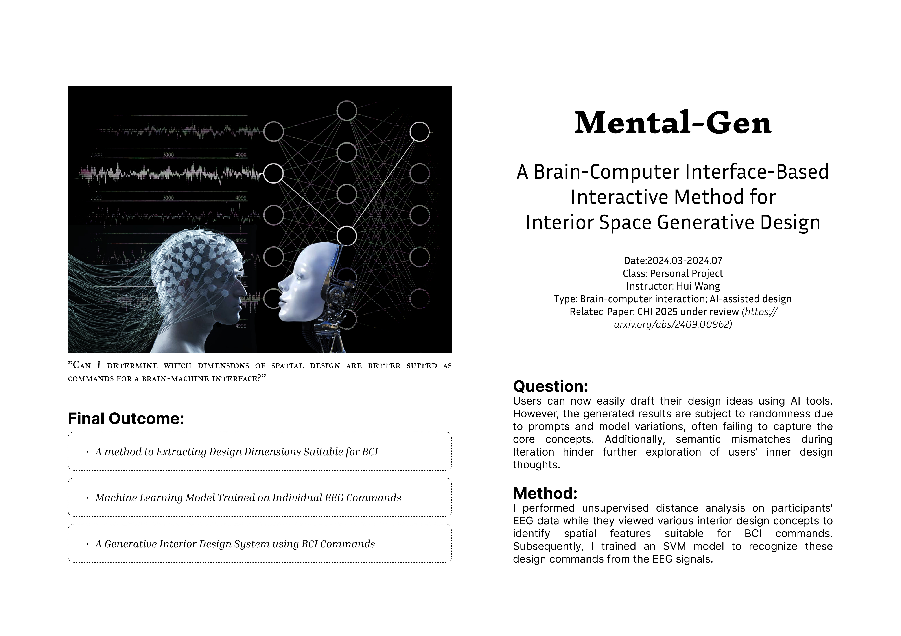

Research · 2024
Mental-Gen
A Brain–Computer Interface based interactive method for interior space generative design.
Background
Users can now easily draft their design ideas using AI tools. However, the generated results are subject to randomness due to prompts and model variations, often failing to capture the core concepts. Additionally, semantic mismatches during iteration hinder further exploration of users' inner design thoughts.
Method
I performed unsupervised distance analysis on participants' EEG data while they viewed various interior design concepts to identify spatial features suitable for BCI commands. Subsequently, I trained an SVM model to recognize these design commands from the EEG signals.
